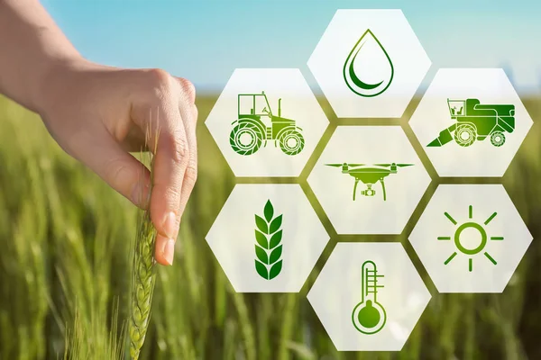
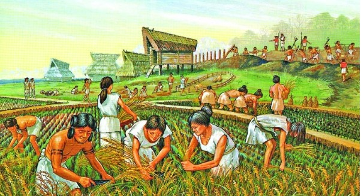
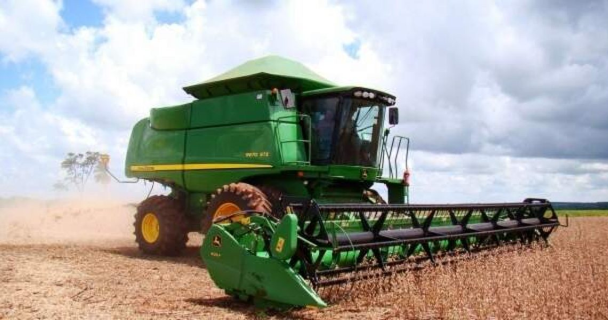

Um conjunto de ferramentas e tecnologias que possibilita ao produtor conhecer toda a área para cultivo de maneira mais completa e que pode ajudar a aumentar o rendimento.
No Brasil, a Agricultura de Precisão foi introduzida em meados da década de 1990, porém os avanços significativos só aconteceram a partir de maio de 2000.
A princípio, a prática da agricultura surgiu cerca de 12 mil anos atrás durante o período neolítico, sendo um dos processos constitutivos das primeiras civilizações..
Hoje os agricultores planejam sua produção com o apoio de sementes tratadas e melhoradas geneticamente. Além disso, empregam equipamentos para operações no campo e instrumentos que monitoram o desenvolvimento das plantas. Portanto, tudo muito diferente do que se empregava há séculos.
